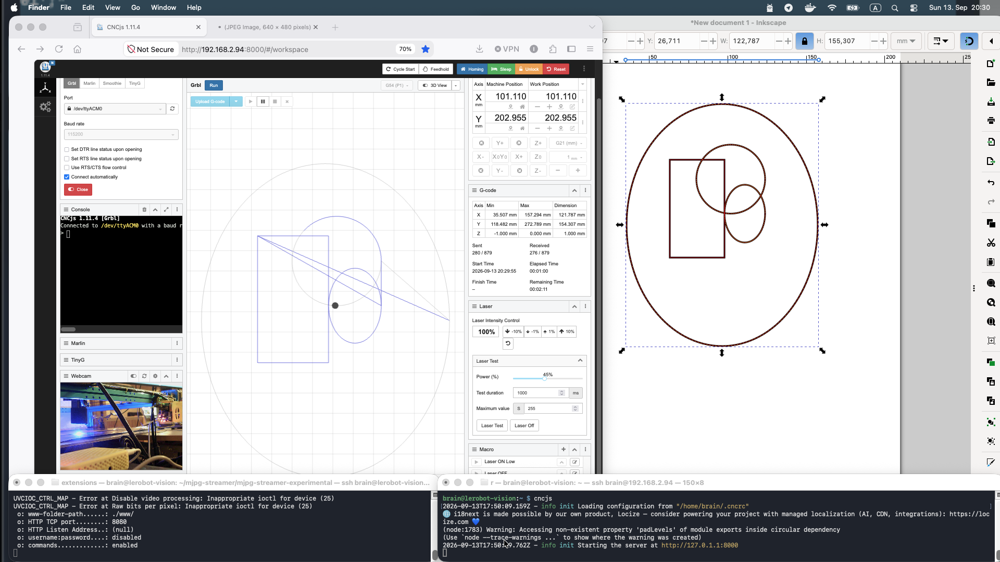

🔥 A laser cutter dead since 2017, actually engraving again
ATMega2560 · GRBL 1.1f · CNCjs on a Pi 4 · SVG-to-G-code, homegrownThe replacement board arrived — GRBL 1.1f on an ATMega2560, three A4988 stepper drivers, running off the existing 12V supply. Motors and endstops wired first; the laser itself deliberately left for later once the right connector was actually in hand.
Straightforward remapping — X and Y motor coil pairs onto the new board's A/B terminals, endstop signal and ground onto their matching pins. Nothing exotic yet.
Two small but important differences from the old Marlin/mLaser stack: GRBL fires the laser with M3/M5, not Marlin's M4 — and laser power is a S0–1000 range, not Marlin's P0–255. Every G-code habit from the old machine needed a small mental remap.
The standard $H homing cycle reliably hung the controller — an endstop-interrupt issue with this specific board, not a wiring fault. Rather than chase the root cause immediately, a manual homing procedure (jog toward the endstops with short relative moves, watch for both Pn:XY flags, then G92 X0 Y0 to zero the origin) became the standing workaround for the rest of the project.
The board turned out to be an Annoy Tools GRBL board, offering four different laser output options (12V 2-pin, 12V 3-pin, 12V 4-pin, 24V 3-pin). The Makeblock laser module needed the simple 12V 2-pin white JST — once identified, wiring was trivial.
With $32=1 (laser mode) enabled, GRBL only fires the laser while the machine is actually moving — G1 X.. Y.. F.. S.. moves and fires together; a stationary M3 alone does nothing. Not a bug, just a genuinely different mental model from a simple on/off laser control.
X and Y motor connectors had been swapped, and the X motor's direction wires needed a red/blue swap. Both fixed, both axes homing cleanly to the front-right corner.
A commanded 50×30mm rectangle first came out at 104×62mm — the inherited 177.8 steps/mm value from the old Marlin setup was nowhere close to correct for this board's drivers and pulley ratio. Measured, corrected, re-tested, repeated:
Design in Inkscape, save as Plain SVG, convert with a small custom svg_to_gcode.py script, upload the result to CNCjs running on the Pi 4, hit Cycle Start. Laser power tuned by result: 150 engraves paper without cutting through; 400 cuts through thin paper cleanly.
The frame's slight out-of-true wobble is gone — the whole machine is now mounted to a 5mm aluminum plate base. Genuine mechanical rigidity, not a workaround.
Relocated onto the frame itself, right next to the GRBL board, inside a yellow 3D-printed housing sourced from Printables — which happens to match the machine's blue frame nicely. No more loose electronics hanging off the side.
Installed and tested the J Tech Photonics Laser Tool extension for Inkscape — a purpose-built plugin for exactly this workflow, working alongside the custom svg_to_gcode.py script from Session 3.
The situation: a USB webcam (HD 720P, /dev/video0) on a headless Pi running CNCjs, needing to be viewed from a completely different machine's browser — direct browser camera access doesn't work here at all; what's actually needed is a real network video stream.
Solution: mjpg-streamer
sudo apt install -y cmake build-essential libjpeg-dev v4l-utilsIdentify the real camera device — USB webcams show up cleanly; ignore the Pi's internal bcm2835-codec ISP nodes, which aren't real cameras:
v4l2-ctl --list-devicesManual test run first:
export LD_LIBRARY_PATH=/usr/local/lib/mjpg-streamer
mjpg_streamer -i "input_uvc.so -d /dev/video0" -o "output_http.so -w /usr/local/share/mjpg-streamer/www -p 8080"Made persistent with a systemd unit — /etc/systemd/system/mjpg-streamer.service:
[Unit]
Description=MJPG Streamer for webcam
After=network.target
[Service]
Environment=LD_LIBRARY_PATH=/usr/local/lib/mjpg-streamer
ExecStart=/usr/local/bin/mjpg_streamer -i "input_uvc.so -d /dev/video0" -o "output_http.so -w /usr/local/share/mjpg-streamer/www"
Restart=on-failure
RestartSec=5
User=brain
[Install]
WantedBy=multi-user.targetsudo systemctl daemon-reload
sudo systemctl enable --now mjpg-streamer.service
sudo systemctl status mjpg-streamer.service # confirmed: active (running)Troubleshooting notes, kept for next time:

One honest item left, and it's the one that actually matters for safety: